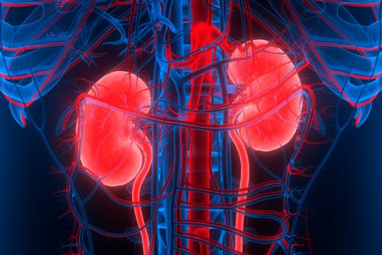

Beneficios y propuestas de mejora
Un trasplante de riñón puede ser el tratamiento indicado para la enfermedad renal crónica o la enfermedad renal terminal a fin de ayudarte a que te sientas mejor y vivas más tiempo.

Beneficios y propuestas de mejora | |
Un trasplante de riñón puede ser el tratamiento indicado para la enfermedad renal crónica o la enfermedad renal terminal a fin de ayudarte a que te sientas mejor y vivas más tiempo. |
|